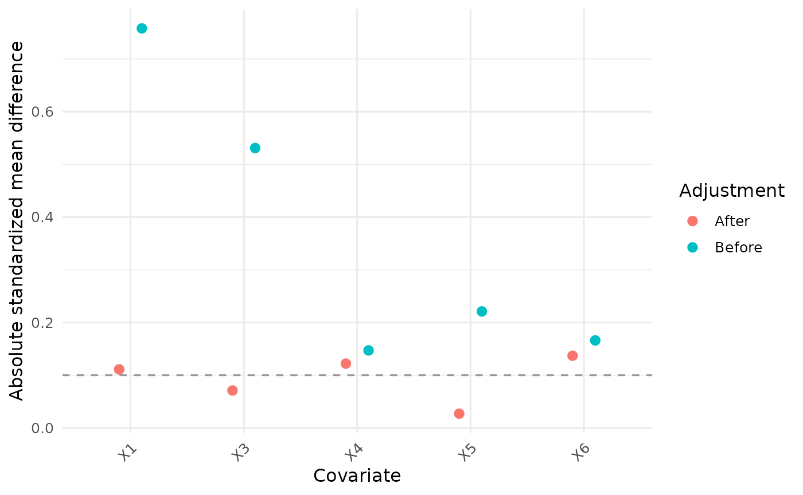
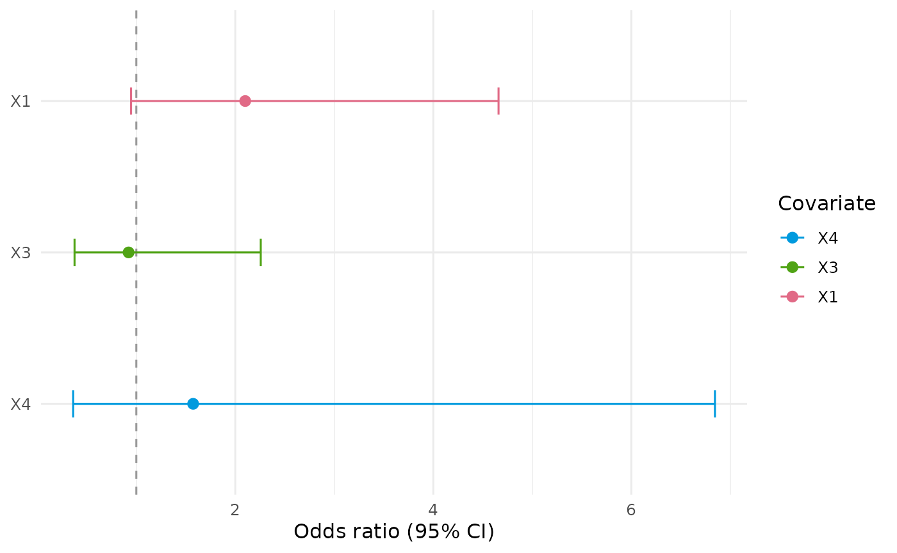
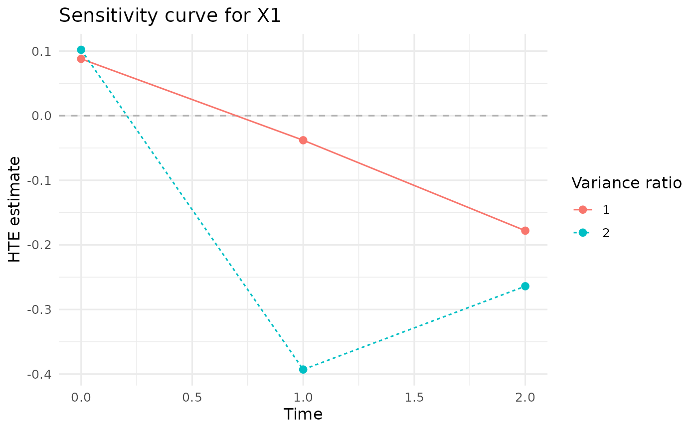
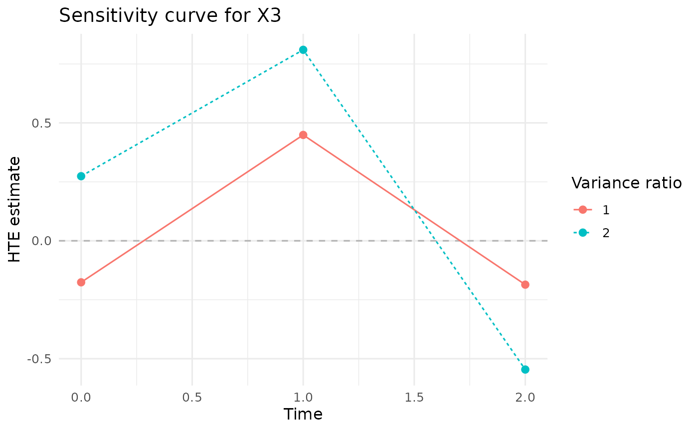
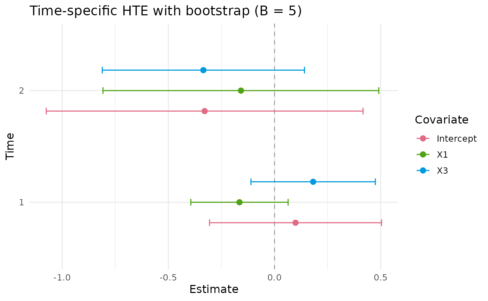
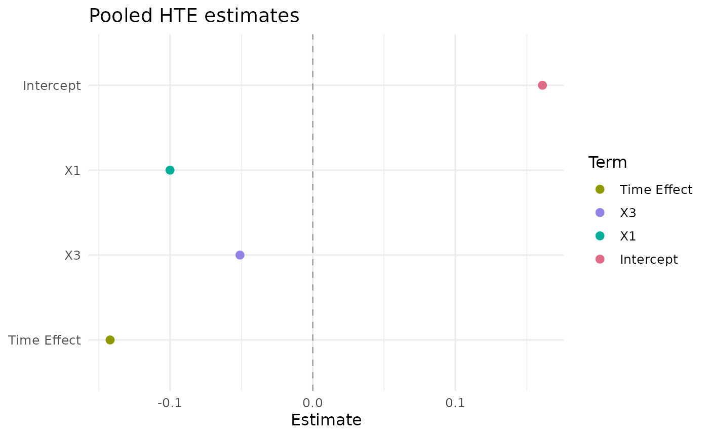

PDRobust
PDRobust implements principal-stratification analyses for longitudinal outcomes that may be truncated by death. Version 0.3.7 uses an explicit mapping-driven workflow and refits each nuisance prediction model from the data supplied to the current function call.
data("BiSample") -> Mapping() -> DataCheck() -> DataStandard() -> prediction / diagnostic / analysis functions1. Load the built-in package data
## id time S A Y X1 X2 X3 X4 X5 X6
## 1 1 0 1 1 0 1.521 0.261 0.649 0 1 0
## 2 1 1 1 1 0 1.521 0.261 0.649 0 1 0
## 3 1 2 1 1 1 1.521 0.261 0.649 0 1 0
## 4 2 0 1 1 0 -0.395 -1.241 -0.115 0 1 0
## 5 2 1 1 1 0 -0.395 -1.241 -0.115 0 1 0
## 6 2 2 1 1 0 -0.395 -1.241 -0.115 0 1 0## patient_id visit_month alive_status treatment clinical_outcome X1 X2
## 1 PT-0171 0 1 1 4.598 1.452 -2.075
## 2 PT-0100 6 0 1 NA 1.473 -0.758
## 3 PT-0056 0 1 0 8.806 -2.722 -0.735
## 4 PT-0034 6 1 0 13.851 -1.471 0.278
## 5 PT-0164 12 1 1 9.643 -1.272 -1.881
## 6 PT-0058 0 1 1 10.341 -0.534 -0.842
## X3 X4 X5 X6
## 1 -0.147 0 1 1
## 2 0.608 0 1 1
## 3 0.424 1 1 0
## 4 -0.158 0 0 0
## 5 -3.333 0 1 0
## 6 -0.092 0 1 0this dataset has unordered patient id, visit month是记录的时间节点；X1 – X6是一些基础数据，是covariates；alive status记录了此刻是否存活，
Both objects are ordinary long-format data frames loaded from the
package data/ directory. BiSample is the
analysis-ready binary example used for the main workflow.
ImperfectConSample is a continuous example with
deliberately imperfect records for demonstrating validation and explicit
subject-level deletion.
2. Define roles and analysis settings with
Mapping()
mapping <- Mapping(
id = "id",
time = "time",
treatment = "A",
survival = "S",
outcome = "Y",
baseline_time = 0,
cutoff_time = 2,
covariates = c("X1", "X3", "X4", "X5", "X6"),
interest_vars = c("X1", "X3"),
y_type = "B"
)
mapping## PDRobust data mapping
## ID: id
## Time: time
## Treatment: A
## Survival: S
## Outcome: Y
## Baseline time: 0
## Cutoff time: 2
## Mapped covariates: X1, X3, X4, X5, X6
## Interest variables: X1, X3
## Outcome type: B (binary)Mapping() returns a pd_mapping object
containing the structural column names, raw baseline and cutoff times,
all nuisance-model covariates, effect modifiers, and the outcome
type.
3. Validate the raw data with DataCheck()
## [1] "valid" "ready_for_analysis"
## [3] "manual_resolution_required" "can_standardize"
## [5] "checks" "settings"
## [7] "diagnostics"
check$ready_for_analysis## [1] TRUE
check$manual_resolution_required## [1] FALSE
head(check$checks) # one row per validation rule## check passed severity standardize_can_fix
## 1 required_columns TRUE error FALSE
## 2 nonempty_data TRUE error FALSE
## 3 missing_id_or_time TRUE error FALSE
## 4 time_encoding TRUE warning FALSE
## 5 mapping_time_endpoints TRUE error FALSE
## 6 analysis_time_grid TRUE error FALSE
## requires_manual_resolution analysis_blocking
## 1 FALSE TRUE
## 2 FALSE TRUE
## 3 FALSE TRUE
## 4 FALSE FALSE
## 5 FALSE TRUE
## 6 FALSE TRUE
## details
## 1 10 required columns are present.
## 2 600 rows detected.
## 3 No rows have missing ID or time.
## 4 Time class: integer ; values can be ordered numerically.
## 5 baseline_time = 0 ; cutoff_time = 2 ; observed times = 0, 1, 2 .
## 6 All actual observed times from baseline through cutoff are included: 0, 1, 2 .
## recommendation
## 1 Correct the mapping or add/rename the missing columns manually.
## 2 Supply a nonempty long-format data set.
## 3 Restore the identifiers/time values, or use `drop = TRUE` to remove unidentifiable rows.
## 4 Standardization will map required raw times to internal integers 0, 1, ..., n.
## 5 Correct the mapping or the underlying time coding before analysis.
## 6 Correct the mapped endpoints or underlying time records. All observed visits within the mapped window are retained.
head(check$diagnostics) # affected rows, IDs, and time summaries## $missing_id_time_rows
## integer(0)
##
## $duplicate_rows
## integer(0)
##
## $duplicate_subjects
## character(0)
##
## $missing_by_time
## time missing_subjects
## 1 0 0
## 2 1 0
## 3 2 0
##
## $incomplete_subjects
## character(0)
##
## $treatment_invalid_rows
## integer(0)DataCheck() never modifies the input data. It returns an
itemized validation report with pass/fail status, severity,
analysis-blocking status, diagnostic details, and recommended
handling.
4. Standardize the panel with DataStandard()
DataStandard() returns a sorted pd_data
data frame. It safely converts explicit binary encodings, maps IDs to
consecutive integers, maps the observed analysis-time grid to
consecutive integers, and attaches mapping and audit attributes. Use
drop = TRUE only when the reported subject-level exclusions
are intended.
pd_data <- DataStandard(BiSample, mapping,drop =TRUE)
head(pd_data)## id time S A Y X1 X2 X3 X4 X5 X6
## 1 1 0 1 1 0 1.521 0.261 0.649 0 1 0
## 2 1 1 1 1 0 1.521 0.261 0.649 0 1 0
## 3 1 2 1 1 1 1.521 0.261 0.649 0 1 0
## 4 2 0 1 1 0 -0.395 -1.241 -0.115 0 1 0
## 5 2 1 1 1 0 -0.395 -1.241 -0.115 0 1 0
## 6 2 2 1 1 0 -0.395 -1.241 -0.115 0 1 0for imperfect dataset, we have:
## patient_id visit_month alive_status treatment clinical_outcome X1 X2
## 1 PT-0171 0 1 1 4.598 1.452 -2.075
## 2 PT-0100 6 0 1 NA 1.473 -0.758
## 3 PT-0056 0 1 0 8.806 -2.722 -0.735
## 4 PT-0034 6 1 0 13.851 -1.471 0.278
## 5 PT-0164 12 1 1 9.643 -1.272 -1.881
## 6 PT-0058 0 1 1 10.341 -0.534 -0.842
## X3 X4 X5 X6
## 1 -0.147 0 1 1
## 2 0.608 0 1 1
## 3 0.424 1 1 0
## 4 -0.158 0 0 0
## 5 -3.333 0 1 0
## 6 -0.092 0 1 0
con_mapping <- Mapping(
id = "patient_id",
time = "visit_month",
treatment = "treatment",
survival = "alive_status",
outcome = "clinical_outcome",
baseline_time = 0,
cutoff_time = 12,
covariates = c("X1", "X2", "X3", "X4", "X5", "X6"),
interest_vars = c("X1", "X2"),
y_type = "C"
)
con_data <- DataStandard(ImperfectConSample, con_mapping, drop = TRUE)
head(con_data)## patient_id visit_month alive_status treatment clinical_outcome X1 X2
## 1 1 0 1 1 10.803 0.168 0.421
## 2 1 1 1 1 12.006 0.168 0.421
## 3 1 2 1 1 7.833 0.168 0.421
## 4 2 0 1 0 4.101 -2.400 -0.324
## 5 2 1 1 0 5.508 -2.400 -0.324
## 6 2 2 0 0 NA -2.400 -0.324
## X3 X4 X5 X6
## 1 -0.557 1 1 1
## 2 -0.557 1 1 1
## 3 -0.557 1 1 1
## 4 -0.391 0 0 0
## 5 -0.391 0 0 0
## 6 -0.391 0 0 0## [1] 599 11## [1] 588 11Model formulas used below
ps_fo <- A ~ X1 + X3 + X4 + X5 + X6
prin_fo <- S ~ (X1 + X3 + X4 + X5 + X6 ) * A
out_fo <- Y ~ (X1 + X3 + X4 + X5 + X6) * A + S5. Prediction functions
PSPred()
ps <- PSPred(
ps_fo,
fit_dat = pd_data,
pred_dat = pd_data,
mapping = mapping
)
length(ps) # nrow(pd_data)## [1] 600
head(ps)## [1] 0.973 0.973 0.973 0.845 0.845 0.845PSPred() fits a baseline logistic treatment model and
returns one propensity prediction for every row of
pred_dat.
PrinPred()
p0 <- PrinPred(
prin_fo,
fit_dat = pd_data,
pred_dat = pd_data,
treatment = 0,
mapping = mapping
)
head(p0)## [1] 1.000 0.936 0.877 1.000 0.831 0.690PrinPred() returns cumulative principal-survival
probabilities under the requested treatment. In longitudinal data it
fits on post-baseline rows whose subjects survived the immediately
preceding observed time. In a single-time analysis it uses all complete
rows and does not construct an at-risk indicator.
OutPred()
## [1] 0.176 0.176 0.176 0.139 0.139 0.139OutPred() returns predicted outcomes after setting
treatment to a and survival to one in
pred_dat. It uses linear regression for
y_type = "C" and logistic regression for
y_type = "B".
6. Diagnostics
PSDiag()
ps_diagnostic <- PSDiag(pd_data, ps_fo)
names(ps_diagnostic)## [1] "smd_before" "smd_after" "weights" "weight_type" "propensity"
## [6] "data" "plot" "formula" "mapping" "call"
print(ps_diagnostic)## Exposure-model balance diagnostics
## covariate adjustment smd
## X1 Before 0.758
## X3 Before 0.531
## X4 Before 0.147
## X5 Before 0.221
## X6 Before 0.166
## X1 After 0.111
## X3 After 0.071
## X4 After 0.122
## X5 After 0.027
## X6 After 0.137
ps_diagnostic$plot
PSDiag() returns unadjusted and IPTW-adjusted
standardized mean differences, ordinary IPTW weights, clipped propensity
scores, plotting data, and a ggplot. The propensity scores are always
truncated internally by pmin(pmax(pi, 0.01), 0.99) before
weights are calculated.
PrinSDiag()
## Principal-score diagnostics
## covariate statistic
## X1 0.437
## X3 0.129
## X4 -0.362
## X5 -0.247
## X6 0.160
principal_diagnostic$plotPrinSDiag() returns cutoff-aligned standardized balance
statistics, clipped propensity scores, cumulative principal scores under
treatment 0 and 1, plotting data, and a ggplot.
7. Principal-stratum profiling with QR()
QR() returns principal-score-weighted means and weighted
quantiles of the mapped interest variables at cutoff, together with the
weights and mapping.
principal_profile <- QR(
pd_data,
prin_fo,
quantile_level = c(0.25, 0.50, 0.75)
)
print(principal_profile)## Principal-stratum weighted means
## X1 X3
## 0.301 -0.075
##
## Weighted quantiles (NA for binary variables)
## $X1
## q0.25 q0.50 q0.75
## -0.303 0.254 0.905
##
## $X3
## q0.25 q0.50 q0.75
## -0.815 -0.123 0.5868. Treatment-group odds ratios with ORCI()
## Odds ratios and confidence intervals
## covname estcoef lowerbd upperbd
## X1 2.100 0.947 4.659
## X3 0.922 0.376 2.257
## X4 1.574 0.362 6.845
or_control$plot
ORCI() returns treatment-group-specific cutoff odds
ratios and confidence intervals, the fitted logistic model, analysis
data, settings, and a forest plot.
Sensitivity analysis
## Warning: SA() encountered nuisance-model instability in 1 distinct model
## warning. Finite prediction-based fits were retained where permitted. Model
## fitting warning for `OutPred binary-outcome model`: the logistic model shows
## complete or quasi-complete separation; finite predictions are retained, but
## coefficient-based interpretation may be unstable.
print(sensitivity)## Sensitivity analysis
## ratiovec time Intercept X1 X3
## 1 0 0.154 0.088 -0.176
## 2 0 0.324 0.102 0.274
## 1 1 -0.078 -0.038 0.449
## 2 1 1.117 -0.393 0.810
## 1 2 -0.270 -0.178 -0.186
## 2 2 0.044 -0.264 -0.546
## Scenarios: 2
sensitivity$plot## $X1
##
## $X3
9. Time-specific HTEs with HTESepT()
separate_hte <- HTESepT(
pd_data,
ps_fo = ps_fo,
prin_fo = prin_fo,
out_fo = out_fo,
target_time = c(1, 2),
B = 5,
conf_level = 0.95,
max_attempts = NULL,
verbose = TRUE
)## Warning: HTESepT() encountered nuisance-model instability in 1 distinct model
## warning. Finite prediction-based fits were retained where permitted. Model
## fitting warning for `OutPred binary-outcome model`: the logistic model shows
## complete or quasi-complete separation; finite predictions are retained, but
## coefficient-based interpretation may be unstable.## Bootstrap: 1/5 successful after 1 attempts.## Bootstrap: 2/5 successful after 2 attempts.## Bootstrap: 3/5 successful after 3 attempts.## Bootstrap: 4/5 successful after 4 attempts.## Bootstrap: 5/5 successful after 5 attempts.
separate_hte$summary## time covariate estimate SD LowerBound UpperBound
## 1 1 Intercept 0.099 0.207 -0.306 0.504
## 2 1 X1 -0.165 0.117 -0.394 0.064
## 3 1 X3 0.182 0.149 -0.111 0.475
## 4 2 Intercept -0.329 0.381 -1.075 0.417
## 5 2 X1 -0.158 0.331 -0.808 0.491
## 6 2 X3 -0.335 0.243 -0.811 0.141
separate_hte$forest_plot
head(separate_hte$boot_mat)## 1_Intercept 1_X1 1_X3 2_Intercept 2_X1 2_X3
## boot1 -0.239502284 -0.16918743 -0.03419992 -0.7679871 0.60398101 -0.6951968
## boot2 0.297857667 -0.26516751 0.27038474 0.1359330 -0.01942559 -0.1461297
## boot3 -0.005750345 0.04934144 0.15954443 -0.6483584 -0.10432988 -0.6986111
## boot4 0.199079892 -0.18688483 -0.01701149 -0.6677521 -0.25887365 -0.4621126
## boot5 0.032666711 -0.12884115 0.27212344 -0.2286360 -0.04681124 -0.3016708HTESepT() returns an HTE estimate for each requested
observed standardized time and each mapped effect modifier, plus the
intercept. target_time controls reported outcome-analysis
times only; principal scores still accumulate over the full
baseline-to-cutoff grid. Set B > 0 for subject-level
bootstrap standard errors and Wald confidence intervals.
10. Pooled HTEs with HTEAllT()
pooled_hte <- HTEAllT(
pd_data,
ps_fo = ps_fo,
prin_fo = prin_fo,
out_fo = out_fo,
B = 0,
verbose = FALSE
)
pooled_hte$summary## term estimate SD LowerBound UpperBound
## 1 Intercept 0.161 NA NA NA
## 2 X1 -0.100 NA NA NA
## 3 X3 -0.051 NA NA NA
## 4 Time Effect -0.142 NA NA NA
pooled_hte$forest_plot
HTEAllT() always pools every observed standardized time
from baseline through cutoff. For a single analysis time it omits the
time-effect term and records that the time effect is not estimable.
11.
SA() derives the outcome type from the standardized
mapping. Continuous outcomes use the original linear-model and
closed-form sensitivity equations. Binary outcomes use logistic outcome
prediction and the same bounded-link HTE equation as
HTESepT(). In both cases it returns estimates under each
specified outcome-noise variance ratio, observed outcome variance by
time, and one plot per mapped interest variable.
The continuous built-in example can be prepared explicitly as follows:
continuous_mapping <- Mapping(
id = "patient_id",
time = "visit_month",
treatment = "treatment",
survival = "alive_status",
outcome = "clinical_outcome",
baseline_time = 0,
cutoff_time = 12,
covariates = paste0("X", 1:6),
interest_vars = c("X1", "X2"),
y_type = "C"
)
continuous_data <- DataStandard(
ImperfectConSample, continuous_mapping, drop = TRUE
)
continuous_sensitivity <- SA(
continuous_data,
treatment ~ X1 + X2 + X4,
alive_status ~ X1 + X2 + X4 + treatment + visit_month,
clinical_outcome ~ X1 + X2 + treatment,
ratiovec = c(0, 0.05)
)